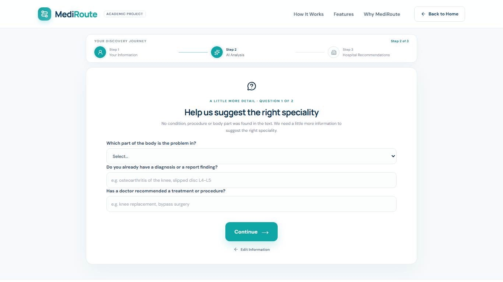
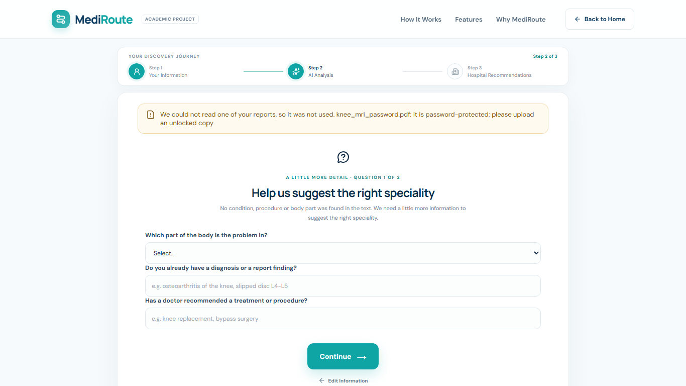
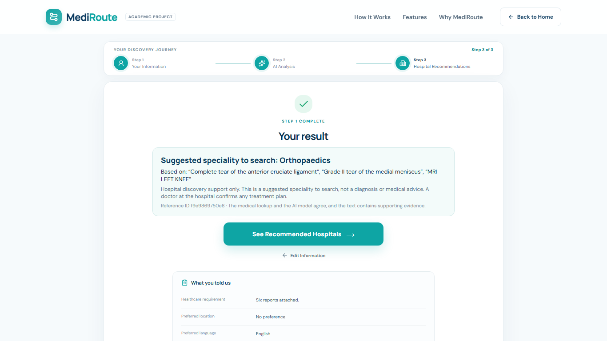
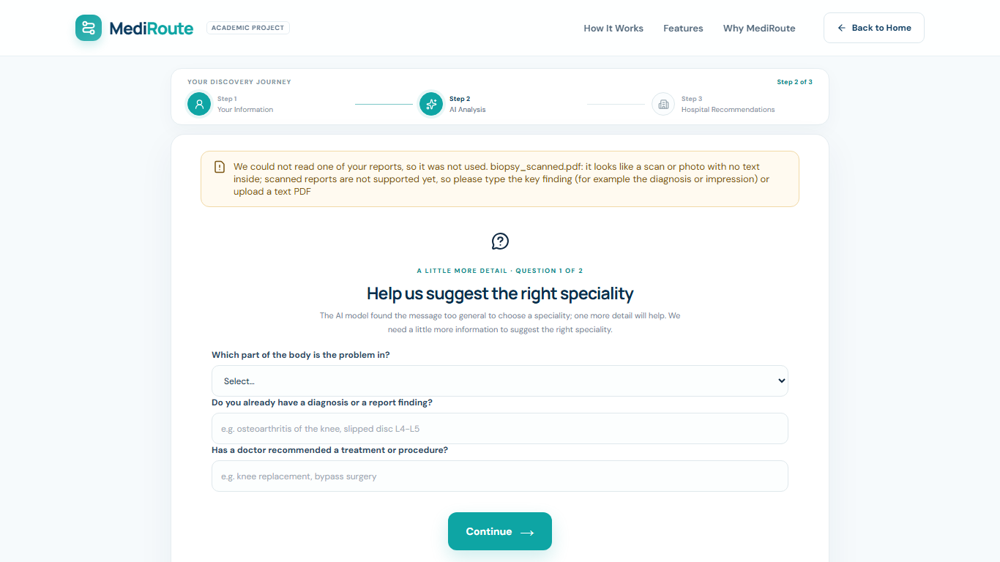

12 Nov 2026 14:21 · 31 cases · synthetic text-based PDFs (data/evaluation/synthetic_reports) · run data/evaluation/pdf_runs/20261112_141300. OCR for scanned or photographed reports is out of scope: such files are expected to be reported as unreadable, not read.
| Case | Kind | Typed text | Expected | Parser (chars) | Result through the API |
|---|---|---|---|---|---|
| R01 | core report | Please see my father's angiography report. | Cardiothoracic Surgery | success (466) | PASS · Cardiothoracic Surgery (judge) |
| R02 | core report | My scan report is attached. What kind of specialist should I | Orthopaedics | success (420) | PASS · Orthopaedics (agreement) |
| R03 | core report | Biopsy report attached. | Oncology | success (446) | PASS · Oncology (agreement) |
| R04 | core report | These are my kidney reports. | Nephrology | success (512) | PASS · Nephrology (agreement) |
| R05 | core report | The eye doctor's report is attached. | Ophthalmology | success (456) | PASS · Ophthalmology (agreement) |
| R06 | core report | Echo report of my daughter, 4 years old. | Pediatric Cardiology | success (436) | PASS · Pediatric Cardiology (judge) |
| R07 | core report | CT scan of my father. | Gastroenterology | success (425) | PASS · Gastroenterology (agreement) |
| R08 | core report | Thyroid report attached. | Oncology | success (433) | PASS · Oncology (judge) |
| R09 | core report | My wife's fertility test results. | Reproductive Medicine | success (438) | PASS · Reproductive Medicine (agreement) |
| R10 | core report | Hearing test results of my son, 2 years old. | ENT | success (414) | PASS · ENT (agreement) |
| R11 | core report | plz see reprot | Orthopaedics | success (559) | PASS · Orthopaedics (agreement) |
| R12 | core report | my fathers heart report | Cardiology | success (458) | PASS · Cardiology (agreement) |
| R13 | core report | brain scan resullt | Neurosurgery | success (460) | PASS · Neurosurgery (agreement) |
| R14 | core report | endoscopy report attached, which doctor? | Gastroenterology | success (439) | PASS · Gastroenterology (agreement) |
| R15 | core report | report for my mom | Obstetrics & Gynaecology | success (461) | PASS · Obstetrics & Gynaecology (judge) |
| L01 | letterhead noise | Biopsy report attached. | Oncology | success (619) | PASS · Oncology (agreement) |
| L02 | lab table | These are my kidney reports. | Nephrology | success (1393) | PASS · Nephrology (agreement) |
| L03 | two columns | My scan report is attached. What kind of specialist should I | Orthopaedics | success (483) | PASS · Orthopaedics (agreement) |
| L04 | long report | Discharge summary of my father is attached. | Cardiothoracic Surgery | success (6973) | FAIL · asked instead of answering: No condition, procedure or body part was found in the text. text 6973 chars > 6000 cut; key finding after cut: False |
| L05 | typos | brain scan resullt | Neurosurgery | success (484) | PASS · Neurosurgery (agreement) |
| L06 | privacy | my fathers heart report | Cardiology | success (612) | PASS · Cardiology (agreement) privacy: no phone / e-mail / ID in the log |
| L07 | two reports, one relevant | Thyroid report attached. | Oncology | success (441), success (763) | PASS · Oncology (judge) |
| L08 | report only | none | Reproductive Medicine | success (435) | PASS · Reproductive Medicine (agreement) |
| E01 | empty file | Report attached. | api_error | error (0) | PASS · HTTP 400: Invalid PDF file: empty.pdf |
| E02 | password-protected | My scan report is attached. What kind of specialist should I | unreadable_notice | error (0) | PASS · patient told the file could not be read |
| E03 | too large | Big scan attached. | api_error | success (65) | PASS · HTTP 413: PDF exceeds the 10 MB per-file limit. |
| E04 | renamed text file | My report. | api_error | error (0) | PASS · HTTP 400: Invalid PDF file: not_really_a.pdf |
| E05 | too many files | Six reports attached. | api_error | success (421), success (421), success (421) … 6 files | PASS · HTTP 400: Maximum 5 PDF reports are allowed per request. |
| E06 | two conflicting reports | Reports of my son attached. | Pediatric Cardiology | success (434), success (413) | PASS · Pediatric Cardiology (judge) |
| E07 | scanned + typed text | Biopsy report attached. | unreadable_notice | needs_ocr (0) | PASS · patient told the file could not be read |
| E08 | scanned only | none | unreadable_notice | needs_ocr (0) | PASS · patient told the file could not be read |



